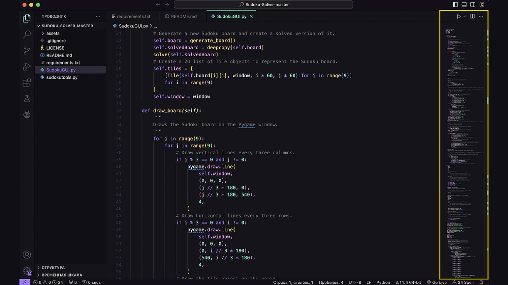

Python-розробник — це інженер-програміст, який використовує мову Python для створення серверної частини (бекенду) веб-додатків, розробки нейромереж, аналізу великих даних або написання скриптів для автоматизації процесів.
Завдяки дуже зрозумілому синтаксису, багато хто починає успішно вивчати цю мову самостійно. Для написання та налагодження коду розробники часто використовують такі популярні інструменти, як Visual Studio Code. Професія є надзвичайно затребуваною, оскільки Python широко застосовується у найрізноманітніших сферах — від простих Telegram-ботів до складних систем штучного інтелекту.
Дізнатися більше можна на офіційному сайті Python.